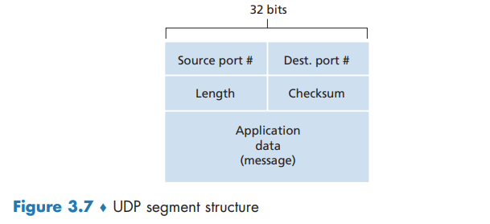

Connectionless Transport UDP
Connectionless Transport: UDP
Some applications are better suited for UDP for the following reasons:
- Finer application-level control over what data is sent, and when. (No congestion-control mechanism)
- No connection establishment.
- No connection state. A server devoted to a particular application can typically support many more active clients when the application runs over UDP rather than TCP.
- Small packet header overhead.
It it is possible for an application to have reliable data transfer when using UDP. This can be done if reliability is built into the application itself. QUIC protocol implements reliability in an application-layer protocol on top of UDP.
UDP Segment Structure

UDP Checksum
The UDP checksum provides for error detection.